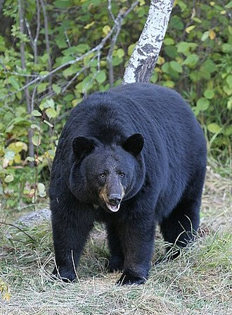
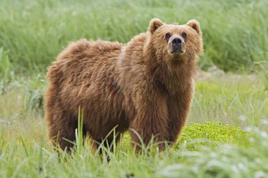
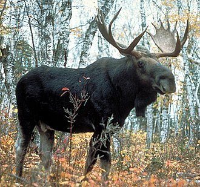
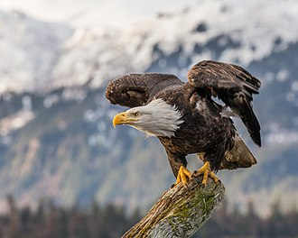
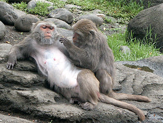

Welcome to the Blog-brary!
This page hosts many facts (from Wikipedia) about numerous animals found around the world! Our animal researcher(s) works to provide their opinions on these animals, so that you can check them out and find some that you like! If you like the facts or opinion of one of the animals, you can save it to your favourites page by pressing the favourites button, or unsave it by pressing the unfavourite button!
Note: There is only one researcher working at this time. We hope to get more Researchers involed in the future.
Black Bear
Facts: “American black bear weight tends to vary according to age, sex, health and season. Seasonal variation in weight is very pronounced: in autumn, their pre-den weight tends to be 30% higher than in spring, when black bears emerge from their dens. American black bears on the East Coast tend to be heavier on average than those on the West Coast, although American black bears follow Bergmann's rule and bears from the Northwest are often slightly heavier than the bears from the Southeast. Adult males typically weigh between 57–250 kg (126–551 lb), while females weigh 33% less at 41–170 kg (90–375 lb).[5][page needed][44] In the state of California, studies have indicated that the average mass is 86 kg (190 lb) in adult males and 58 kg (128 lb) in adult females.[39] Adult American black bears in Yukon Flats National Wildlife Refuge in east-central Alaska were found to average 87.3 kg (192 lb) in males and 63.4 kg (140 lb) in females, whereas on Kuiu Island in southeast Alaska (where nutritious salmon are readily available) adult American black bears averaged an estimated 115 kg (254 lb).[45][46] In Great Smoky Mountains National Park, adult males averaged 112 kg (247 lb) and adult females averaged 47 kg (104 lb) per one study.[47] In one of the largest studies on regional body mass, bears in British Columbia averaged 73.7 kg (162 lb) in 89 females and 103.1 kg (227 lb) in 243 males.[48] In Yellowstone National Park, a population study found that adult males averaged 119 kg (262 lb) and adult females averaged 67 kg (148 lb).[49] Black bears in north-central Minnesota averaged 69.9 kg (154 lb) in 163 females and 124.95 kg (275 lb) in 77 males.[50] In New York, the two sexes reportedly average 135 kg (298 lb) and 74 kg (163 lb), respectively.[51][page needed] It was found in Nevada and Lake Tahoe region that black bears closer to urban regions were significantly heavier than their arid-country dwelling counterparts, with males near urban areas averaging 138 kg (304 lb) against wild-land males which averaged 115.5 kg (255 lb) whereas peri-urban females averaged 97.9 kg (216 lb) against the average of 65.2 kg (144 lb) in wild-land ones.[52] In Waterton Lakes National Park, Alberta adults reportedly averaged 125 to 128 kg (276 to 282 lb).[53][page needed] Adults typically range from 120 to 200 cm (47 to 79 in) in head-and-body length, and 70 to 105 cm (28 to 41 in) in shoulder height. The typically small tail is 7.7–17.7 cm (3.0–7.0 in) long.[41][54][55][56] Although they are the smallest bear species in North America, large males exceed the size of other bear species, except the brown bear and the polar bear.[41] The biggest wild American black bear ever recorded was a male from New Brunswick, shot in November 1972, that weighed 409 kg (902 lb) after it had been dressed, meaning it weighed an estimated 500 kg (1,100 lb) in life and measured 2.41 m (7.9 ft) long.[57][page needed] Another notably outsized wild American black bear, weighing in at 408 kg (899 lb) in total, was the cattle-killer shot in December 1921 on the Moqui Reservation in Arizona.[57][page needed] The record-sized American black bear from New Jersey was shot in Morris County December 2011 and scaled 376.5 kg (830 lb).[58] Even larger, the most massive American black bear recorded in Pennsylvania (one of six weighing over 363 kg (800 lb) shot in the last 15 years in the state) weighed in at 399 kg (880 lb) and was shot in November 2010 in Pike County.[59] The North American Bear Center, located in Ely, Minnesota, is home to the world's largest captive male and female American black bears. Ted, the male, weighed 431–453.5 kg (950–1,000 lb) in the fall of 2006.[60] Honey, the female, weighed 219.6 kg (484 lb) in the fall of 2007.[61]”
Reference: American black bear. (2020, December 02). Retrieved December 06, 2020, from https://en.wikipedia.org/wiki/American_black_bear
Opinion (reasearcher1@totallylegitmail.net): "I never liked the thought of running into one of these guys, mostly because I can never remember what the rule is for keeping yourself safe when encountering one. Am I supposed to run? Am I supposed to shout at it? Should I climb a tree? I have no idea, and that's why Black bears don't rank very high on my favourite animal list. Definitely not a fan."
Brown Bear
Facts: “The brown bear (Ursus arctos) is a large bear species found across Eurasia and North America.[1][2] In North America, the populations of brown bears are called grizzly bears. It is one of the largest living terrestrial members of the order Carnivora, rivaled in size only by its closest relative, the polar bear (Ursus maritimus), which is much less variable in size and slightly bigger on average.[3][4][5][6][7] The brown bear's range includes parts of Russia, Central Asia, China, Canada, the United States, Hokkaido, Scandinavia, the Balkans, the Picos de Europa and the Carpathian region, especially Romania, Bulgaria, Iran, Anatolia and the Caucasus.[1][8] The brown bear is recognized as a national and state animal in several European countries.[9] While the brown bear's range has shrunk and it has faced local extinctions, it remains listed as a least concern species by the International Union for Conservation of Nature (IUCN) with a total estimated population in 2017 of 110,000. As of 2012, this and the American black bear are the only bear species not classified as threatened by the IUCN.[1][2][6] Populations that were hunted to extinction in the 19th and 20th centuries are the Atlas bear of North Africa and the Californian, Ungavan[10][11] and Mexican populations of the grizzly bear of North America. Many of the populations in the southern parts of Eurasia are highly endangered as well.[1][12] One of the smaller-bodied forms, the Himalayan brown bear, is critically endangered, occupying only 2% of its former range and threatened by uncontrolled poaching for its body parts.[13] The Marsican brown bear of central Italy is one of several currently isolated populations of the Eurasian brown bear and is believed to have a population of just 50 to 60 bears.[9][14]”
Reference: Brown bear. (2020, November 30). Retrieved December 06, 2020, from https://en.wikipedia.org/wiki/Brown_bear
Opinion (reasearcher1@totallylegitmail.net): "If this bear wasn't so fluffy and awesome looking, I would probably have the same opinion as I do with Black bears. Honestly it doesn't matter whether the rule is to run away from or shout at it, because I would probably have no choice but to hug it. It's LITERALLY a teddy bear. Dangerous creatures have no business being this friendly looking. Definitely a great animal, that I almost wish I could have as a pet."
Lion

Facts: “The lion (Panthera leo) is a species in the family Felidae and a member of the genus Panthera. It has a muscular, deep-chested body, short, rounded head, round ears, and a hairy tuft at the end of its tail. It is sexually dimorphic; adult male lions have a prominent mane. With a typical head-to-body length of 184–208 cm (72–82 in) they are larger than females at 160–184 cm (63–72 in). It is a social species, forming groups called prides. A lion pride consists of a few adult males, related females and cubs. Groups of female lions usually hunt together, preying mostly on large ungulates. The lion is an apex and keystone predator; although some lions scavenge when opportunities occur and have been known to hunt humans, the species typically does not. Typically, the lion inhabits grasslands and savannas, but is absent in dense forests. It is usually more diurnal than other big cats, but when persecuted it adapts to being active at night and at twilight. In the Pleistocene, the lion ranged throughout Eurasia, Africa and North America, but today it has been reduced to fragmented populations in sub-Saharan Africa and one critically endangered population in western India. It has been listed as Vulnerable on the IUCN Red List since 1996 because populations in African countries have declined by about 43% since the early 1990s. Lion populations are untenable outside designated protected areas. Although the cause of the decline is not fully understood, habitat loss and conflicts with humans are the greatest causes for concern. One of the most widely recognised animal symbols in human culture, the lion has been extensively depicted in sculptures and paintings, on national flags, and in contemporary films and literature. Lions have been kept in menageries since the time of the Roman Empire and have been a key species sought for exhibition in zoological gardens across the world since the late 18th century. Cultural depictions of lions were prominent in the Upper Paleolithic period; carvings and paintings from the Lascaux and Chauvet Caves in France have been dated to 17,000 years ago, and depictions have occurred in virtually all ancient and medieval cultures that coincided with the lion's former and current ranges.”
Reference: Lion. (2020, November 27). Retrieved December 06, 2020, from https://en.wikipedia.org/wiki/Lion
Opinion (reasearcher1@totallylegitmail.net): "I don't really have too much of an opinion on lions, really. They sleep a lot, hunt hen they need to, travel in packs, but that's kind of it. I mean, The Lion King was a great movie that gave a lot of expectations when I was a child, but they were ultimately let down when I learned more about them. Just to reiterate, lions are okay."
Moose
Facts: “The moose (North America) or elk (Eurasia), Alces alces, is a member of the New World deer subfamily and is the largest and heaviest extant species in the deer family. Most adult male moose have distinctive broad, palmate ("open-hand shaped") antlers; most other members of the deer family have antlers with a dendritic ("twig-like") configuration. Moose typically inhabit boreal forests and temperate broadleaf and mixed forests of the Northern Hemisphere in temperate to subarctic climates. Hunting and other human activities have caused a reduction in the size of the moose's range over time. It has been reintroduced to some of its former habitats. Currently, most moose occur in Canada, Alaska, New England (with Maine having the most of the lower 48 states), Fennoscandia, the Baltic states, and Russia. Its diet consists of both terrestrial and aquatic vegetation. The most common moose predators are the gray wolf along with bears and humans. Unlike most other deer species, moose do not form herds and are solitary animals, aside from calves who remain with their mother until the cow begins estrus (typically at 18 months after birth of the calf), at which point the cow chases away young bulls. Although generally slow-moving and sedentary, moose can become aggressive and move quickly if angered or startled. Their mating season in the autumn features energetic fights between males competing for a female.”
Reference: Moose. (2020, December 05). Retrieved December 06, 2020, from https://en.wikipedia.org/wiki/Moose
Opinion (reasearcher1@totallylegitmail.net): "Yeah! Here we have the mighty moose! You know? The one that wonders at will like in the song, or the ones that supposedly everyone is supposed to have as a pet in Canada? These guys are huge, and just because of their potential to be ridden like horses, I'm going to have to say that these are awesome animals. Really, who even decided to choose horses over these guys?"
Bald Eagle
Facts: “The bald eagle (Haliaeetus leucocephalus) is a bird of prey found in North America. A sea eagle, it has two known subspecies and forms a species pair with the white-tailed eagle (Haliaeetus albicilla). Its range includes most of Canada and Alaska, all of the contiguous United States, and northern Mexico. It is found near large bodies of open water with an abundant food supply and old-growth trees for nesting. The bald eagle is an opportunistic feeder which subsists mainly on fish, which it swoops down and snatches from the water with its talons. It builds the largest nest of any North American bird and the largest tree nests ever recorded for any animal species, up to 4 m (13 ft) deep, 2.5 m (8.2 ft) wide, and 1 metric ton (1.1 short tons) in weight. Sexual maturity is attained at the age of four to five years. Bald eagles are not actually bald; the name derives from an older meaning of the word, "white headed". The adult is mainly brown with a white head and tail. The sexes are identical in plumage, but females are about 25 percent larger than males. The beak is large and hooked. The plumage of the immature is brown. The bald eagle is the national bird of the United States of America. The bald eagle appears on its seal. In the late 20th century it was on the brink of extirpation in the contiguous United States. Populations have since recovered and the species was removed from the U.S. government's list of endangered species on July 12, 1995 and transferred to the list of threatened species. It was removed from the List of Endangered and Threatened Wildlife in the contiguous states on June 28, 2007.”
Reference: Bald eagle. (2020, December 01). Retrieved December 06, 2020, from https://en.wikipedia.org/wiki/Bald_eagle
Opinion (reasearcher1@totallylegitmail.net): "Ah yes, the symbol of freedom (in America). To be honest, bald eagles seem very awesome and all, but at the same time they kind of freak me out. If you ever take the time to look them in the eyes, you can really tell how focused they are on what their looking at. I'm glad people are too big for them to hunt with that look on their face. Overall I'd say that I'm not too big of a fan of these guys."
Taiwanese Macaque
Facts: “Among the 22 species of the genus Macaca that are found in southern and eastern Asia as well as northwestern Africa, the Formosan macaque is endemic to the island of Taiwan (area: 36,000 km2). Formosan rock macaques live in mixed coniferous-hardwood temperate forest, as well as bamboo and grassland at 100-3600m (328-11,812 ft). The social structure of macaques is generally characterized as often occurring as a large stable multimale-multifemale troop.[3] Formosan macaque is considered to be female-bonded which is similar to other species in the genus Macaca.... Solitary adult males accounted for 5% of the entire population, and they were seen interacting with social troops especially during mating season. They communicate using visual signals and sounds. They will "scream" when non-group members come near them. Group members usually respond using a "kyaw-kyaw" sound.[4] Rock macaques are diurnal, arboreal, and terrestrial. They usually stay in trees and less so on the ground. They rest in forest and forage in grasslands. Their diet consists of fruits, tender leaves, buds, grass stems, insects, snails, and bird eggs.[5]”
Reference: Reference: Formosan rock macaque. (2020, November 29). Retrieved December 06, 2020, from https://en.wikipedia.org/wiki/Formosan_rock_macaque
Opinion (reasearcher1@totallylegitmail.net): "I'm not too sure what to say about these guys. I mean, who doesn't like monkeys?"